ProjectNight.com
Wednesday Night Project Night, Page 7
Most recent night first.
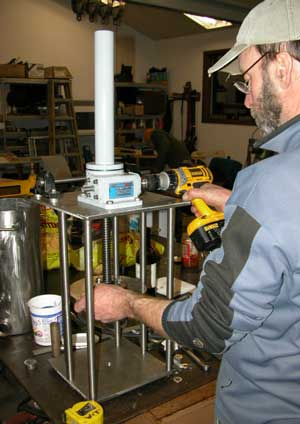
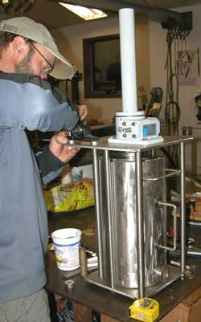
22 October 2008: Tim's shop.
Genuine serious sausage stuffer project advancement.
The white tube of food grade grease was fully adequate for the job, but the little cordless drill was smoking before it got all the grease properly distributed in the worm drive gear box.
We looked out the door to determine that there were no mere riff-raff showing up, then broke out the good wine. Launched right into the stories of the projects we might bring into the shop, from vehicles, as the evening progressed. Well, even most that were brought in did not get out of the boxes and bags. But we got the grinder going, the belt sander, a couple cordless drills, a cork screw, and a pocket knife for the smoked salmon.
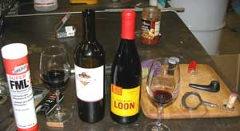
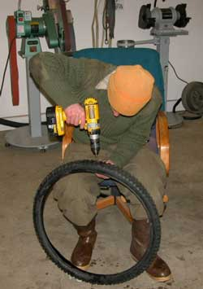
Well, here in Fairbanks, because of the cold, at the start of the winter the bicycles chaps drill holes in bicycle tires because the rubber is so cold and stiff it does not need any air in the tire, and the air inside is so brittle that it breaks up into little sharp pieces that need a way to get out or they will chew up the rubber, or something like that. That is about the most the photographer could figure out from watching this odd activity. Then the guy put screws into some of the holes, maybe because he drilled them too big. After the automobile was invented, it became difficult to figure out the minds of these guys that ride bicycles all winter in Fairbanks.
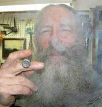
Then we really started blowing smoke.The reason so many snow machine trailers have their license plates stolen in Alaska is because the process to get a license plate (proof of tax paid) through the government is like trying to get on a commercial airplane with the name Mohamud Abdul of Terroristan. The New Delhi airport lost luggage paperwork maze is the zenith of efficiency compared to the Alaska government bureaucracy under the Palin/Bush DemocanRepublicrat War Regime. At first all they wanted was your money, insatiably greedy that they are, but they have become so arrogant about it all, now they demand that you kowtow to their paperwork pyramid, gouging you for your time as well. Two process attempts with the State Bureaucracy of Motor Vehicles (for a non-motorized little trailer), two Governor Palin office wastes of time, two local State senators, 4 local State legislators later, and a sub-contractor license and tags vendor effort were enough to abandon the effort. A person just as well keep their eye open for what looks like some government bureaucrat's or politician's abandoned trailer. Another apparently common process is to use the set of paperwork that snow machiners pass around. No few snow machine trailer license plates in Fairbanks are on trailers with remarkably similar paperwork information. Comrade, do you have your license tag for that cordless drill?
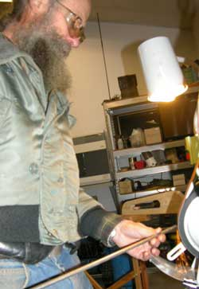
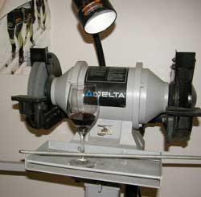
A good bench grinder has place to set your glass of wine while you are grinding a long piece of all-thread to a point so it can be pushed all the way through a Jeep tail gate hinge to bolt the otherwise two wayward hind end sides of the Jeep back together. Well, here in Fairbanks, because the cold cracks solid steel, you pretty much have to bolt your car back together every 35 years or so.The hunting stories got mixed with the prank stories. The guy from Ohio had a friend ship his moose hunting rifle to Fairbanks, by FedEx. Just before he and his other friends headed out to the moose hunting cabin east of Fairbanks, he opened the package and pulled out a Daisy BB gun.
The project report from our ProjectNight colleague in Houston Texas was received with such lack of data about any specific project being actually worked on that its authenticity was verified.
The BarbecueNight.com delegate reported on the BarbecueNight Grill project. Seems that the old grill is, ah, used-up. Well, here in Fairbanks, because of the cold, during the winter barbecue grills have to get red-hot just to get enough heat transfer to the meat that is freezing on the top. Everybody knows that. Grills burn themselves thin, fast. There may be an effort to make the Exxon Valdez oil spill barbecue grill into a gas model, at ProjectNight.com. But first the BBQnight.com web slave is suggesting that a commercial brand grill maker might want to donate a grill for the advertising potential on the website. He has offered the opportunity to a couple commercial grill companies, so far. But apparently they looked at the website and decided their grills are not up to BarbecueNight standards in Fairbanks Alaska, or maybe they read the rhetoric and do not want to jeopardize their government contracts that derive $1,000 each for $100 grills.
Oh, tell all fishermen of the world.... Do whatever is required to avoid Ontario Canada for fishing. The Ontario Canada government fishing police have instituted a Rob-The-Visiting-Fisherman program. When you get caught for showing up in Ontario, and you will if you show up, the Ontario Canada fishing police will just keep asking you questions until you have accumulated a dozen different fines for arranging the words of your answers not in the government-approved manner. Did you touch your friend's fishing pole, Comrade? The Ontario fishing police have become so institutionally inbred that they cannot figure out that they would make fewer permanent enemies by just robbing fishermen at gunpoint rather than harassing them with a bunch of time-wasting bureaucratic paperwork for the process to rob them. Yes, the Canadians have fully caught up with the US government police-state tactics. Well, the Romans did it, so the North Americans can do the same.
When the conversation got down to fishing stories we scheduled next week at Matt's Shop, and ambled out into the new snow. This time we formally swear to get more done next week.
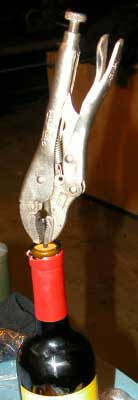
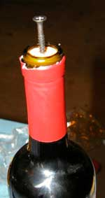
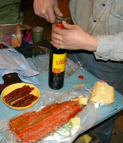
15 October 2008:
Actual projects. We got the bottle of wine open.
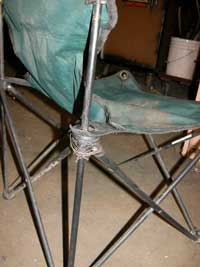
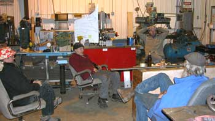
Well, here a couple years ago I saw one of those common plain fold-out camp chairs in a dumpster. I had to get down in there a bit to get it. First had to throw out an old bed box springs and part of the bed frame, a couple bags of real garbage, some splintered door trim with a lot of those little nails, some broken sheet rock, a couple gallon cans of something that was leaking and pretty sticky, most of a vacuum cleaner, a boot, some clothes, some computer parts, half a small bookshelf and some sort of plastic and aluminum tube frame for something that had some fabric shards still attached. Still wondering what that was for. But I got to the fold-out chair. Except for it being filthy it was in good shape except the broken plastic part that slid on the steel tubing. So I saved it of course.
Well, took a couple years but at ProjectNight tonight I wrapped a goober of tie wire, also called bailing wire, around the broken plastic part, and twisted several ends, and I got a perfectly good fold-out chair, for when somebody is wearing dirty clothes anyway. Good enough for any politicians or lawyers what might stop by.
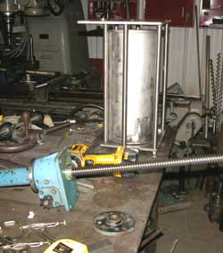
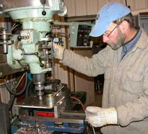
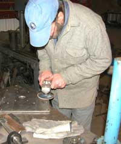
And that aint all. The sausage stuffer looks pretty close to being done.
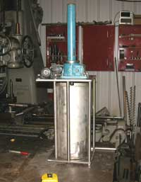
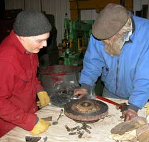
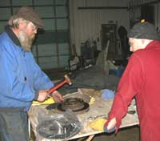
Some sort of disc brakes got hammered onto a wheel hub, unless that was really a water pump.
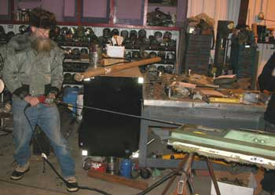
If I had knowed that I would eventually have to drill out the entire Jeep rusted tail gate hinge tube across the bottom, I would not have filled it with so much welding bead, slag, epoxy, silicone and what looked like a bunch of mouse droppings. But with patience I got it completely drilled out tonight at ProjectNight before I broke the 4 foot drill. Don't know yet how many other things will go wrong but I am closer to bolting the two sides of my jeep back to each other, through the tail gate hinge tube, so they don't bounce around so independently and scare the guy driving behind me. If you don't want people tail-gating you, just let things get wobbly back there. Maybe a bumper sticker: "I'm on the phone".
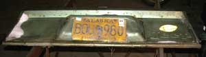
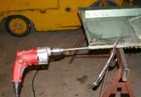
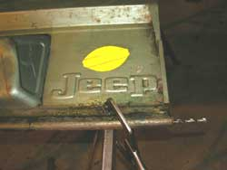
Well, yes, that is a lemon. It's a Jeep. You buy them to work on them, not drive them.
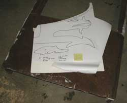
The elevated dragon headed foot fire pit advanced. We found an old rusted piece of heavy plate steel out in the snow, welded to a couple channel beams. It might make two of the four dragon headed legs. We brought it inside the shop, and talked about it. Sure hope we get to that project before that chunk of steel gets moved back out of the way too often.I got no idea how the subject of government came up, but there was only some arm waving and interesting language, not any violence because there were no government folk showed up. The reason government is getting worse and worse so fast is that they only talk to their own ilk, for rightfully increasing fear of the governed.
If you are not laughing at the economic crash, maybe it is because you still believe all that vastly over-printed worthless paper money of the major countries will still have any value in anyone's opinion shortly. Too many people have seen the photos of the Chinese and Saudi warehouses stacked full of pallets of factory wrapped American 100 dollar bills. Who would trade anything of utility for them, to end up with the same storage problem for too much worthless printed paper? A screw driver is of greater utility than bundles of 100 dollar bills, and wine tastes better. A third grade kid can figure out that you can overprint paper money into worthlessness, but not the US DemocanRepublicrat War Regime and the amusing adults who vote for it. My recommendation is that everyone panic, to make up for those folks who are going to just muddle through it all.
Next ProjectNight is at Tim's shop. This time we are going to try to get more done, maybe even overthrow the government if Bush does not finish collapsing it before then. Bring a project, fine wine, and don't be late.
8 October 2008: Jon's Machine Shop.
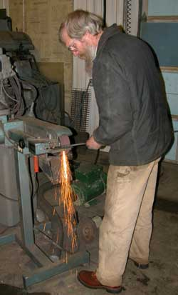
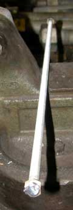
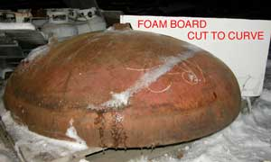
Actual projects got done. The pattern form for the Alaska oil pipeline end cap dragon headed and footed elevated yard fire pit was made, and the dragon discussed. The fire pit is for the outdoor parties at the Alaskan Alpine Club world headquarters. That is the four foot wide pipe end cap, on a pallet out in the snow. It is HEAVY
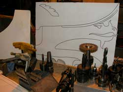
That is the dragon, or will be when it gets cut from steel, for the four legs.
And that is Jon over there grinding the new 4 foot long drill.
And that is a long piece of all-thread, with a nut welded on each end. Hmmm, maybe I forgot something in that process.
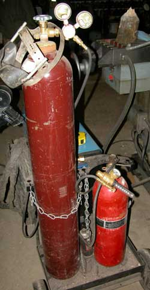
Hey, when you are out of CO2 for the wire feed welder, find an old CO2 fire extinquisher. Close enough.
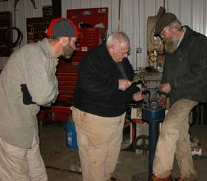
The piston rings for a 1907 steam engine were carefully removed from the extensively rusted pistons.
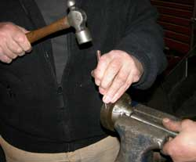
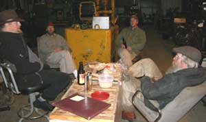
ProjectNight planning and consultation time.
The 4 foot long 3/8 drill was made to drill out a 1973 jeep tail gate hinge tube to bolt the two sides of the jeep together. Well, the jeep is falling apart. No problem. Bolt it back together with a bolt going from one side of the jeep to the other. Normal.
A high tech stainless steel sausage press made from the usual smattering of salvaged parts of things was advanced. Mahogany beams were selected for the Alaskan Alpine Club HQ social gathering room upgrade. Ale and Gamel Dansk were tested. Moose sausage, smoked red salmon and gourmet cheese were appreciated, along with some other stuff. Moose hunting stories were told, including the perfect hunt with the perfect shot at a nice bull, wherein the successful hunter chose to not load his rifle, to therefore effect the perfect hunt not altered by what would otherwise be all the work. Some hunters are smarter than others. Parts for home built robots were discussed. The Alaskan Alpine Club HQ museum acquired a couple donated ice axes from local climbers. Less than profound admiration for government was heard. And more, albeit as usual.
1 October 2008: Matt's Shop.
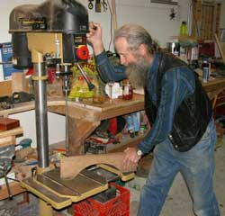
The moose are in the freezer. Some of the Project Night chaps, including the web slave, were busy with the annual food gathering project the last few Project Nights. The hunting is the easy part. Then it takes awhile to cut and package a moose for the freezer, especially if it is done as a project.
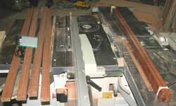
But we got back on a roll with the shop projects. A bit quiet this project night, but projects were, ah, advanced. The propane tank holder got drilled. The lacewood LED light light fixtures got sawed. And, ah, the international crisis was resolved. Pick any crisis of your preference. We solved it.Fine wine. Good ale. Smoked salmon. Chips and dip. The usual sort of thing.
And that is the full report. Expect more excitement as the dragon head elevated fire pit project starts past the discussion stage, perhaps next week.
27 Aug 2008: Jon's Shop. Photos in camera.
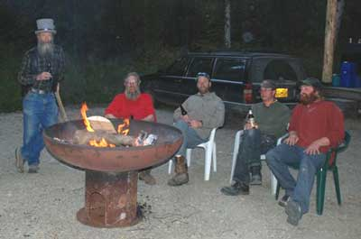
If the web slave had knowed now what he only suspected earlier, he would have kept working on his 1973 Jeep Commando wiring until it was done.The primary project was standing around admiring the new elevated fire pit, made from an end bell cap for the Alaska Oil Pipeline. Yes, impressive. It is the prototype for certain design features for the next more elaborate one. You should hear it ring when the edge of it is hit with a log. The second one was not started, but was heavily planned. Dragon head handles. Dragon claw feet. Dragon head ram for the gong quality. A swiveling grill holder. And that was when we were still on the ale, before we got into the wine.
Well, yes, many stories were told.
And Carolina from Mexico showed up. Lives north of Puerto Vallarta a ways, or some place like that. Hopefully she will sell her return flight ticket, and stay.
One of the projects not got done at ProjectNight was, finishing polishing the stainless steel nuts for a stainless bolt from the Oil Pipeline. The bolt is somewhat large. And the four foot long drill was not welded. So the long bolt through the tail gate hinge, to hold the two sides of the 73 Jeep near the frame, will wait. Hopefully the jeep will also wait. And the ice tower nozzle heads were not tapped for the nozzles. The next 5.4 million year old wood pipe was not advanced.
The guy walking the slack line rope across Goldstream Creek had wet shoes and pants.
There was a suggestion that back yard shade tents are alien creatures from another planet, and that green plastic chairs are their offspring. Well, looks that way, the way they cluster and all, if you look at them in back yards.
You are fortunate that the full report was classified. Need to know only.
20 Aug 2008: Matt's Shop. Photos in camera.
Smoked Chitina Red, Gamel Dansk, great Guac, and the other stuff.
The LED light panel with the decorative lacewood frame was advanced, and then slowed a bit by having to drill out a twisted-off little brass screw. Well, every time one starts to work with tiny brass screws, one must learn again how easily they twist off. The project engineer got three out of many holes drilled, and learned that he is going to make a jig to hold everything in place before he starts that project again. The Alaska National Mpingo forest is patiently waiting for the project to be completed, to transition from summer sun light to winter electricity light. The blue/red LED light is the latest thing in cost-efficient lighting for house plants, especially with an esthetically pleasing lacewood frame.
There was some sort of wood project with a lot of holes being drilled through a paper template, but it looked too complex for the web slave to try to explain. The heavy steel I beam sections paint priming project had something to do with a deck on a cool timber frame and panel house being built.
The amusing nature of one of the local industrial company owners was described. Only at Fairbanks Alaska.
That is the full report because it is so late at night, and there are projects to do in the morning, or at least by noon.
13 Aug 2008: Jon's Shop. Camera crew forgot their cameras.
Way productive Project Night.
The web slave took various projects out of his jeep, and into the shop. Thereupon some folks walked out of the trees on the other side of the materials yard, and shouted, "Over here."
So we sat over there, in the sun, next to the trees, telling ProjectNight stories, eating fresh smoked Chitina Red, drinking local brewed ale, smoking fine maduro cigars, and generally concluded that the prior effort had been worth it.
Then somebody mentioned actual projects, so the ale, wine, salmon, brie, cigars, Scotch, chips and such stuff went into the shop where we sat down and continued telling ProjectNight stories.
A few malcontents stood by large power machinery and made sparks or glowing red metal. A few faces on the stainless steel nuts for the 105 pound stainless bolt got machined until the end mill carbide cutter blades were spinning out an arc of soft glowing red metal. Dull cutters. Last cutters in the shop. And that was after they had been sharpened too many times. No problem. At half done, that project will be on schedule if it is finished in the next 5 years.
Six other projects were variously finished, started, or advanced.
George Bush jokes were told. The most recent government invasions of privacy, denials of rights and summary seizures of assets were itemized. It was noted that the English language has too few derogatory words of sufficient substance to adequately describe the US DemocanRepublicrat Regime and its level of saturating corruption. Many of that Regime's names will be chiseled into stone, as the most repugnant humans to ever foul the planet.
The New Hampshire 1950's skis from a club member will show up in February, to be donated to the Alaskan Alpine Club museum. Dumpster diving stories featured the Fox lady with the cat in the hat. The road beside her yard has become a tour bus stop. The Juneau Report was detailed. The Juneau reporters failed to report in. They probably had the same lame excuse we were exercising. A certain yard sale by an occasional ProjectNight luminary was discussed. I would mention the sort of things for sale at one of the more unique Fairbanks insider yard sales, but the stinkin feds are reading this, and would fly in a swat brigade for yard sale back-up.
The Antarctica ice hole melter was analyzed. They want to put a scuba diver into a lake submerged below a lot of ice. Looks like a good quality device. Gas powered high tech steam ice melter. If you knew how much gasoline cost in Antarctica, you would recognize how much global warming benefits humans.
The report was given on the official actual final completion of the AlaskanAlpineClub HQ complete rain gutter concluded earlier today, another ProjectNight project started several project nights ago.
Much was learned and wisely left untold.
6 Aug 2008: Photos in camera: Tim's shop.
It all started rather ordinary, with the salmon smoker being cleaned after a batch of Chitina Red salmon was smoked, holes drilled in some rain gutter hangers, some new pipe clamps being made, and that sort of usual stuff. Gourmet snacks included said recently smoked Chitina Red.
Some other folks arrived. Some chairs were rolled out. The wine was opened. And concepts poured in through the open door, being interpreted by the Project Night crew.
The Ultimate GeoCache prank just may get done. History will change. Wait, I think we came up with that idea a few years ago. Well, if we get around to it, history will change again. Absolute secret until then.
14,000 year old societies on Alaska's north slope were discussed. Hey, if you are one of those folks from the city who think things were all wonderful and in harmony with nature back before industrial Europeans/Americans gouged the earth for iron and coal and oil, just consider in much greater detail the process of 20 to 30 hungry little humans sitting on a bluff, chipping stone spear points, dull compared to steel, watching the mammoth and caribou wandering through the bog on the flats below. Then noticing a vulnerable mammoth in a more boggy area where it could not move fast. Then going down and surrounding it, throwing 60 to 90 primitive spears at it, most of them sticking in the animal just a little ways, while the mammoth was thrashing-about in fear-stricken rage at each spear hitting it from different directions, one at a time as the humans got close enough to throw their spear then scramble back a ways, until the mammoth was too weak to even move, bleeding with many spears sticking out of it, looking like a pin cushion. Then the humans mucking through the bog to poke it to death, and cut off what they could with stone tools, and such reality. Tough life at the edge. Be appreciative of the folks who muck through the swamps to suck oil out of the pristine wilderness. Or make spears and select tough friends.
And then the Alaska hunting stories really got going. The scribe distinctly heard: "I would not go moose hunting without a battery powered SawsAll." A long ways from the spear days. One of those present completely bones his moose with a knife only, puts the meat in game bags, loads them into his kayak, and floats back down the creek until he sets up his tent for the evening, on his way back to town. Another ProjectNight hunter uses a battery powered SawsAll to quarter the moose, bones and all, lifts the quarters onto a 4 wheeler trailer, and drives back to his hunting cabin for the night before driving back to town the next day. The stories went from the minimum packing distance between the dead moose and the 4 wheeler or kayak (0 steps), to the maximum (3 days of packing 100+ pound loads). The number of shots to bring down a moose at what distance could not match the 50 spear strikes for mammoths in earlier days, but the shot hitting the moose in his antlers was laughed at, as usual.
We did not get the Juneau report for which we were waiting. The Juneau ProjectNight delegation was probably telling the halibut fishing and deer hunting stories, while working on the cabin upgrade projects. We suspect that a finer grade of wine was being appreciated.
Floating homes on floating islands were discussed, for Alaska rivers, Wisconsin lakes and Alaska ocean. Photos were analyzed. Design progress was made.
Fishing stories went from Walleyes to sharks.
Local well water stories included the usual adjacent wells with variously good water or deadly arsenic concentrations, unusable iron concentrations, high potassium, and filtering systems. Fairbanks is a heavily mineralized area with pocket concentrations that make some expensive wells completely not usable. Of course a few folks strike gold deposits and get enough gold out of their water gold filter to pay for the well. And they do not tell the IRS. The unmitigated audacity.
If anybody near a US nuclear submarine base sneaks into the base, and cuts the nose off a submarine, maybe at the 6 foot wide line, we want that shape of steel for a back yard elevated bonfire ring. Hey, it would be cool. Great ProjectNight project. Email us. But it does not have to be from a submarine. Any shallow bowl shape of steel, 5 or 6 feet across would be good. Preferably cheap or a trade item.
A report was presented on a Mt. Fuji area (Japan) local party of doctors and mayors, including a ProjectNight mountain climbing luminary. The Fuji party was similar to ProjectNight, and centered on sushi and sake of a standard only affordable to doctors and mayors, but culturally similar to that of Fairbanks area ProjectNight sorts who can adjust some of the images with a few arrangements of words. It was suggested to the guys who brought wine, to upgrade their selection next time. Sake would be good.
The conversation seemed normal enough until the same old two-year-old story about the wall safe was mentioned. Well, it is an old wall safe, locked, that came from the dumpster, with something inside it, that has been laying around the shop for that long. The idea was to get inside without ruining the safe, so it could be used again. Well, by then more than one bottle of wine had been consumed, and the idea of not ruining the safe got set aside. Tools emerged. There was sawing, grinding, hammering, chiseling, drilling and such. Took awhile, but we got in from the back side. Shined a little flashlight in the hole. Bingo. There was definitely something inside. It must forever remain a secret. We are sure you can understand.
Speaking of upgrading the wine next time: Next ProjectNight is at Jon's Machine Shop, unless Jon is off on some adventure. The usual weekly notice will be late as usual, so check your email earlier that evening. If you are not on the ProjectNight email list, email the web slave at Doug at Buchanan.ws.
And there we jolly well have it.
30 Jul 2008: PHOTOS LATER: Duff's shop.
The lacewood LED light fixture frame/trim got cut to fit the cool new LED red/blue light panels for this winter's light augmentation for house plants, especially the Mpingo trees. Lacewood is visually curious stuff. This project will be featured in photos when it is finished. Duff's table saw is really scoocum.
The automatic nailer got fixed. And the new sign for the timber frame buildings for sale got designed.
The beer, cheese, crackers and Yak sausage were mixed with varied dissertations on whether McCain or Osama would win their current argument over how much it would eventually cost before the US financially lost its worthless paper money for valuable oil gambit. Like McCain, Obama cannot save the US from the effects of Osama because they are clueless of any process beyond wars and prisons which create the easily solved problems they cannot figure out how to solve.
Major designer fireplaces in impressive houses were redesigned, and oil/wood boilers were evaluated.
The tangle of three washmachine-washed old climbing ropes were coiled. The mud and salmon slime smell from Chitina dipnetting last week was mostly gone.
Dan and Lisa, from around the corner did not show up with good wine and their wood project. Maybe they were using a hand saw at home, and therefore actually getting it done.
Some of John Waterman's stuff from Mark's old octagon outhouse archives was transferred to the new AlaskanAlpineClub museum.
That's it. We were then outta there.
23 Jul: Tim's shop. Web slave was still wrapping salmon from Chitina Dipnetting, so he did not get there to verify that little if anything got done.
16 Jul: Matt's shop.
Major function. Genuinely fine maduro cigars, Churchills.
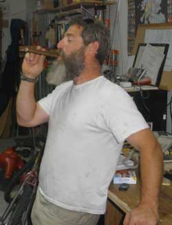
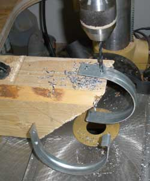
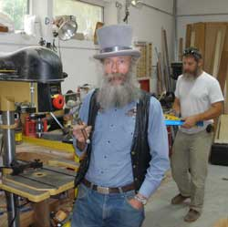
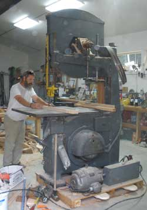
Projects were done. The monster band saw was cranked up to full speed to cut a handle for the monster maul for adjusting big beams on timber frame houses. Four inch wide electrical conduit hangers were modified to hang modified ABS pipe for a modified seamless gutter for the prestigious Alaskan Alpine Club world headquarters. It is half the cost of commercial seamless gutters. The project is becoming a bit over ten times the amount of work, but, that is the Alaskan way to do projects. Saving a dime and making the project PERFECT is worth any cost.
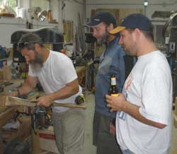
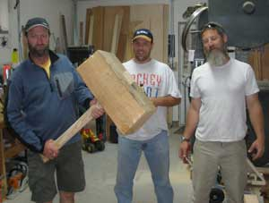
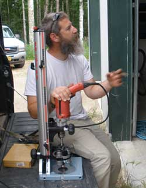
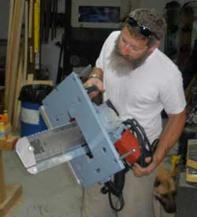
The Owl Report has it that the owl at Tim's shop is nesting in a hole in a tree ten feet away from the owl nest Tim made at ProjectNight. He didn't give a hoot.
New toys were brought forward for analysis. There are some high quality tools being made to make some specialized tasks very efficient. Unfortunately they cost so much that they must actually be used to earn their show time. Work is in progress. Call Matt if you want a high quality small timber frame cabin or house, or two.
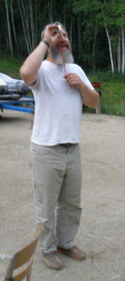
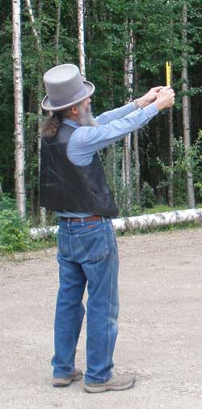
A Merlot and Cab shut down the projects and moved the entire crew outside the shop for awhile to enjoy the ambiance of a Fairbanks summer evening in the parking lot. Had to shoot a few mosquitoes, but there is always plenty of ammo when you are not shooting full auto.
And there was the height of an adjacent three that had to be measured, in metric, English, and slaunchwise.
We went through certain other concepts that must remain secret, and required us to first post the guard dogs. Expect a full report at the proper time, or just keep an eye on the northern horizon.
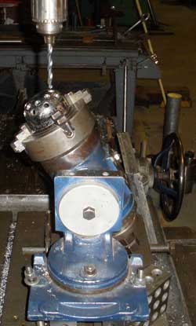
10 Jul 2008: Jon's shop.
Drilling the new ice tower nozzle heads was completed. Tapping, welding and stuff next.
Fine wine, gourmet cheese, watermelon, shop stories.
So from where does that vibrating humming noise in the house water pipes come? The well pump? Water flow through a constriction in the line? Email your answer to Doug@Buchanan..ws. And what is the cure?
As to the matter of water... A little iron in water is not yet on any terrorist list, especially if the water is high quality commercial well water with no iron to start with. But the Divine All Mighty Environmentalist Division of the Benevolent Government Authority has just decreed that the standard old plain steel or cast iron pumps on water delivery trucks must be changed to stainless steel pumps, at $1,500 each, so you can get some of the more toxic alloy metals in stainless steel, in your water, and pay more for it. The bureaucrats therefore get to write more regulations that produce more excuses to write revenue-producing citations, and therefore issue more paper reports. Machine shops therefore get to make more custom stainless steel pumps. The humans are on schedule.
Had do sharpen a drill three times to get a safety wire hole through a certain stainless clevis bolt for the swivel on Betty's Floating Island.
Profound planning was completed for the AlaskanAlpineClub.org headquarters, a gaggle of adventures, and a few conspiracies related to the overthrowing of whatever needs to be overthrown. Take a number and be patient. Lot of things need overthrowing. Easy process, just takes time. On the list of projects.
2 Jul 2008: Jon's shop, or near John's shop, over in the trees by the cabin, on the bridge across Goldstream.
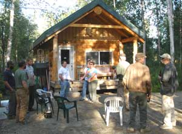
A record was set. Not one project, not one, advanced even a metric inch. Everyone was over by the cabin drinking fine brew, near the brewery, and some finer distillate. The stories crossed Goldstream and back several times. We can make a single malt Alaska scotch from malted Alaska barley and some peat squeezings from the old peat bog behind John's shop, on the other side of Goldstream. We will let you know when the first batch reaches Goldstream.
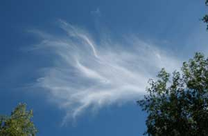
The obscure foot bridge across Goldstream, just down from the larger nugget stretch, just above the fine flour gold flatwater stretch through the main gold bearing part of the valley, was made from an old catwalk on a North Slope oil drill rig. How it got there is not entirely known, or would want to be mentioned. A lot of North slope oil field and pipeline equipment and materials seeped out beyond the oil field, and some of it never got that far north.A cloud came by, which looked like some of the stories we were telling.
Do you know how much it cost for harbor fees if your fishing boat sinks at its harbor slip in Ketchikan, or how much it costs to get your canoe out of the Ketchikan boat impoundment area if it gets impounded because one tie-off comes untied-off? Just do not let it happen. And if you cannot afford to unimpound your canoe, and therefore paddle a piece of scrap styrafoam across the harbor to reach your fishing boat, expect to irritate the harbor cops who got their maliciousness training from the National Park Service cops.
I wonder what Fairbanks stories are told in Ketchikan.
The new ice tower nozzle head was chucked up to drill the nozzle holes, then was unchucked when project night was completed. Fortunately there is a little time before it starts freezing again.
25 Jun: Matt's shop. Camera man forgot his new camera. Matt has not sent the photos he took.
The little gap in ProjectNight reports facilitated some projects in other parts of the world.
Serious attempt to drill safety wire holes in the ends of some stainless steel bolts. The guy was guessing at the drill speed. He guessed wrong. Did a lot of drilling at a high speed. Did not get much hole. No problem. Next project night at John's shop. John knows about these things.
Cut a lot of ABS pipe into rain gutter troughs that will have no leaks and be half the cost of commercial seamless gutter, at only ten times the hours of dink-around work. Well, that is what Project Night is all about. And an ABS pipe rain gutter is the sort of idea these Alaska ProjectNight sorts would attempt. The first lengthwise cut through ABS pipe tends to pinch the blade. The second cut is more reasonable. Remember that if you are ever cutting ABS pipe lengthwise. And use a slow drill speed for drilling stainless steel.
Some standing around in the Alaska summer, drinking fine local ale, and discussing the political lunacy of humans advanced all that needed to be advanced.
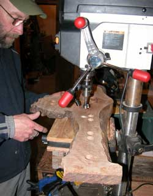
16 April: Duff's shop.
First, an actual project was advanced, with a lot of attention by the Project Night folks who so rarely see an actual project at Project Night. The ski rack got done just in time for the snow to melt, so the skis would have a place to patiently wait for next winter.
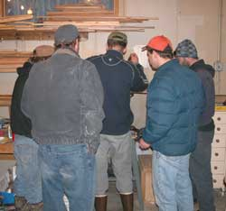
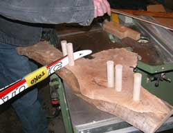
Then there was a darts project.
Then there was some sort of group endeavor with a hand held power tool of some sort.
Then the quintessential lignitized wood project was brought forward with the Scotch and beer and wine, for the photo.
9 April 2008: Matt's shop
Rudolph Steiner was mentioned. From that edge of the universe of knowledge, the expedition went farther out fast, leaving the shop tools idle but the brew supply diminishing. They seem to have found their way back, but they brought knowledge not common to many conversations, and that might frighten those who do not question what they are told.
There was the demonstration of the new get-out-of-the-way mortise and tenon joint making machine. Wow. The shop toy making industry is on full voltage.
Then there was the ski pole basket transfer project, putting good old baskets onto the red ski poles found in the dumpster, from the broken blue ski poles found in the dumpster. That required a little heat from the heat gun, and some Old 55 from Silver Gulch Brewery.
Well of course the 5.4 million year old lignitized wood project came out, for the photo, and was then put back. Sometimes the appearance of the project is the project. At least it did not get lost at the edge of the universe during that conversation.
2 April: Jon's Machine Shop.
Sure good thing the frayed snow scoop showed up, needing a couple pop rivets, or that whisky sitting on the 105 mm recoilless rifle shell would have been the only project that got done.
But there was no small volume of pontificating on profound concepts, all ascribed to the archives.
However, the web slave is uploading this report more than a week later, while sitting in the ice shack of the AlaskanAlpineClub.org Web Cam on John Reeves' Ice Tower, so the archives are not at hand, so that's the full report.
26 March 2008: Duff's shop
A sheet of plywood was painted white, for a sign. Start to finish, completed project, white. Arduous project. Barely got it done by the time we left the shop. Several of us were required to carefully examine the paint, and insure that it dried at a uniform rate.
The dart throwing project slowed some other projects.
The northern lights were whipping around the sky, which required observation time.
There was much discussion of spring garden planting, and why the drill press was not working as preferred.
All manner of other projects were greatly advanced to near completion, or not so near completion.
The camera guy was sent up to the shop headquarters to photograph the progress on new kitchen counter back tile project being pursued by three of the project night folks during this Project Night. The tile is brown.
The process and progress are revealed in the photos. But apparently the planning was advanced, not unlike the projects back down at the shop.
Page 8 October 08 ---- January
09
Page 9 February 09 --- November
09
Page 10 November 09 - Present
Page 6 February 08 --- March 08
Page 5 December 07 -- February
08
Page 4 October 07 ---- December
07
Page 3 July 07 --------- October
07
Page 2 April 07 -------- June
07
Page 1 November 06 -- March 07